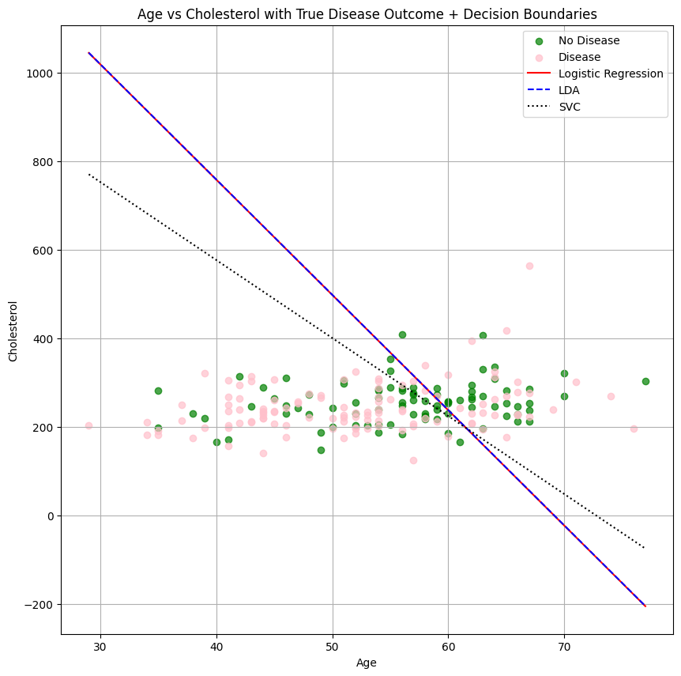

import pandas as pd
import numpy as np
import matplotlib.pyplot as plt
from sklearn.model_selection import GridSearchCV
from sklearn.linear_model import LogisticRegression
from sklearn.discriminant_analysis import LinearDiscriminantAnalysis
from sklearn.svm import SVCThe Data
At this link, you will find a dataset containing information about heart disease patients: https://www.dropbox.com/scl/fi/0vrpdnq5asmeulc4gd50y/ha_1.csv?rlkey=ciisalceotl77ffqhqe3kujzv&dl=1
A description of the original dataset can be found here: https://archive.ics.uci.edu/dataset/45/heart+disease (However, this dataset has been cleaned and reduced, and the people have been given fictious names.)
1. Logistic Regression
Fit a Logistic Regression using only age and chol (cholesterol) as predictors.
For a 55 year old, how high would their cholesterol need to be for the doctors to predict heart disease is present?
How high for the doctors to estimate a 90% chance that heart disease is present?
df = pd.read_csv('https://www.dropbox.com/scl/fi/0vrpdnq5asmeulc4gd50y/ha_1.csv?rlkey=ciisalceotl77ffqhqe3kujzv&dl=1')
X = df[['age', 'chol']]
y = df['diagnosis']Dataset loaded and features/target extracted.
First 5 rows of X:
age chol
0 60 230
1 60 318
2 62 263
3 43 303
4 66 302
First 5 rows of y:
0 No Disease
1 Disease
2 No Disease
3 Disease
4 Disease
Name: diagnosis, dtype: objectlogreg = LogisticRegression()
logreg.fit(X, y)LogisticRegression()In a Jupyter environment, please rerun this cell to show the HTML representation or trust the notebook.
On GitHub, the HTML representation is unable to render, please try loading this page with nbviewer.org.
LogisticRegression()
logreg.intercept_array([-3.24011226])logreg.coef_array([[0.04686331, 0.00180124]])intercept = logreg.intercept_[0]
age_coef = logreg.coef_[0][0]
chol_coef = logreg.coef_[0][1]
# divide by intercept to find satisfying value
cholesterol_disease_logreg = (0 - intercept - (age_coef * 55)) / chol_coef
cholesterol_disease_logregnp.float64(367.8748897985677)target_logit = np.log(0.9 / (1 - 0.9))
cholesterol_90_disease_logreg = (target_logit - intercept - (age_coef * 55)) / chol_coef
print("90% chance: ", cholesterol_90_disease_logreg)90% chance: 1587.71587927543832. Linear Discriminant Analysis
Fit an LDA model using only age and chol (cholesterol) as predictors.
For a 55 year old, how high would their cholesterol need to be for the doctors to predict heart disease is present?
lda = LinearDiscriminantAnalysis()
lda.fit(X, y)LinearDiscriminantAnalysis()In a Jupyter environment, please rerun this cell to show the HTML representation or trust the notebook.
On GitHub, the HTML representation is unable to render, please try loading this page with nbviewer.org.
LinearDiscriminantAnalysis()
intercept = lda.intercept_[0]
age_coef = lda.coef_[0][0]
chol_coef = lda.coef_[0][1]
# how high cholestoral for disease?
cholesterol_disease_lda = (0 - intercept - (age_coef * 55)) / chol_coef
cholesterol_disease_ldanp.float64(368.235357529938)3. Support Vector Classifier
Fit an SVC model using only age and chol as predictors. Don’t forget to tune the regularization parameter.
For a 55 year old, how high would their cholesterol need to be for the doctors to predict heart disease is present?
# svc + tune regularization paramter
svc = SVC()
param_grid = {
'C': [0.1, 1, 10, 100],
'kernel': ['linear', 'rbf'],
'gamma': ['scale', 'auto']
}
grid_search = GridSearchCV(svc, param_grid, cv=5, scoring='accuracy', n_jobs=-1)
grid_search.fit(X, y)GridSearchCV(cv=5, estimator=SVC(), n_jobs=-1,
param_grid={'C': [0.1, 1, 10, 100], 'gamma': ['scale', 'auto'],
'kernel': ['linear', 'rbf']},
scoring='accuracy')In a Jupyter environment, please rerun this cell to show the HTML representation or trust the notebook. On GitHub, the HTML representation is unable to render, please try loading this page with nbviewer.org.
GridSearchCV(cv=5, estimator=SVC(), n_jobs=-1,
param_grid={'C': [0.1, 1, 10, 100], 'gamma': ['scale', 'auto'],
'kernel': ['linear', 'rbf']},
scoring='accuracy')SVC(C=10)
SVC(C=10)
best_svc_model = grid_search.best_estimator_
best_params = grid_search.best_params_
best_score = grid_search.best_score_
print(f"Best parameters found: {best_params}")
print(f"Best cross-validation accuracy: {best_score}")Best parameters found: {'C': 10, 'gamma': 'scale', 'kernel': 'rbf'}
Best cross-validation accuracy: 0.6175609756097562best_svc = SVC(C=10, kernel = "linear")
best_svc.fit(X, y)
intercept = best_svc.intercept_[0]
age_coef = best_svc.coef_[0][0]
chol_coef = best_svc.coef_[0][1]
cholesterol_disease_svc = (0 - intercept - (age_coef * 55)) / chol_coef
cholesterol_disease_svcnp.float64(312.72538621511626)4. Comparing Decision Boundaries
Make a scatterplot of age and chol, coloring the points by their true disease outcome. Add a line to the plot representing the linear separator (aka decision boundary) for each of the three models above.
plt.figure(figsize=(10, 10))
diagnosis_colors = {'No Disease': 'green', 'Disease': 'pink'}
for diagnosis_type, color in diagnosis_colors.items():
subset = df[df['diagnosis'] == diagnosis_type]
plt.scatter(subset['age'], subset['chol'], color=color, label=diagnosis_type, alpha=0.7)
# Set labels and title
plt.xlabel('Age')
plt.ylabel('Cholesterol')
plt.title('Age vs Cholesterol with True Disease Outcome + Decision Boundaries')
# series of all ages
age_range = np.array([X['age'].min(), X['age'].max()])
# --- Logistic Regression Decision Boundary ---
logreg_intercept = logreg.intercept_[0]
logreg_age_coef = logreg.coef_[0][0]
logreg_chol_coef = logreg.coef_[0][1]
chol_logreg_boundary = (-logreg_intercept - logreg_age_coef * age_range) / logreg_chol_coef
plt.plot(age_range, chol_logreg_boundary, color='red', linestyle='-', label='Logistic Regression')
# --- LDA Decision Boundary ---
lda_intercept = lda.intercept_[0]
lda_age_coef = lda.coef_[0][0]
lda_chol_coef = lda.coef_[0][1]
chol_lda_boundary = (-lda_intercept - lda_age_coef * age_range) / lda_chol_coef
plt.plot(age_range, chol_lda_boundary, color='blue', linestyle='--', label='LDA')
# --- SVC (Linear Kernel) Decision Boundary ---
svc_intercept = best_svc.intercept_[0]
svc_age_coef = best_svc.coef_[0][0]
svc_chol_coef = best_svc.coef_[0][1]
chol_svc_boundary = (-svc_intercept - svc_age_coef * age_range) / svc_chol_coef
plt.plot(age_range, chol_svc_boundary, color='black', linestyle=':', label='SVC')
plt.legend()
plt.grid(True)
plt.show()